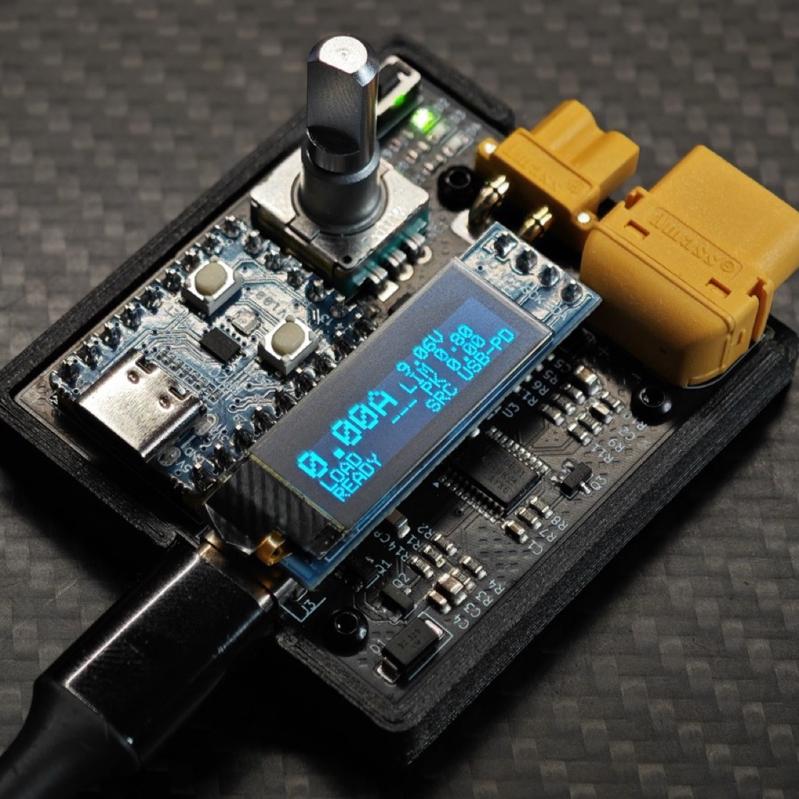
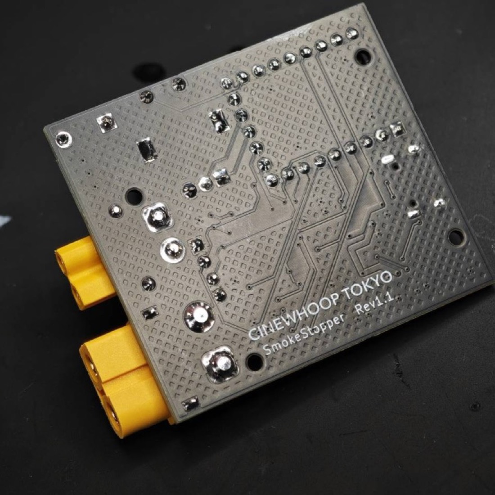

最初の火入れが、いちばん危ない。
はんだのブリッジ、裏返したコンデンサ、配線のミス。 組み上がったばかりの機体には、目で追いきれない失敗が残っています。 バッテリーを挿せば、それが一瞬で煙になる。
うまくいけば、何も起きない。
外れたときだけ、取り返しがつかない。
その瞬間に、何が起きるか。
機体が組み上がった。 バッテリーを挿す。 ……その前に、一度これを通す。
いつも通りの数字。安心して次の作業へ進めます。 この値を覚えておけば、次の機体は見比べるだけで判断できます。
ボタンを押しても、電気は流れません。
バッテリーを挿していたら、煙が出ていた。
これが、Smoke Stopper。
有機ELの画面、ダイヤル、ボタン、XT60とXT30。 ダイヤルとコネクタまで含めて 60.3 × 49.3 × 26.1 mm。工具箱に放り込んでおけるサイズです。


操作は、ボタンとダイヤルだけ。
覚えることは多くありません。チェックから通電まで、短く押していくだけ。

PD対応充電器を接続します。バッテリーは要りません。
機体を接続します。
XT60と同じ出力。同時には使えません。
電流・電圧・負荷抵抗・ピーク電流と、いまの状態。
側面のUSB-Cは記録用。通電には使いません。
回して選び、押して決める。電流上限と電圧の設定に。
短く押すたびに次へ進みます。チェック、通電、停止、遮断の解除まで、このボタンだけで完結します。
点灯は待機、点滅は通電中。異常は赤の点滅回数で分かります。
「たぶん大丈夫」を、数字にする。
正常な機体の値を一度おぼえれば、次の機体が正常かどうかは 見比べるだけで分かります。「たぶん大丈夫」で済ませずに済みます。
通す量は、自分で決める。
機体の消費電流に合わせて、上限を5段階から選べます。
低いところから始めて、必要なぶんだけ上げる。電子ヒューズとソフトウェアの二重で見ています。
過電流・過電圧・熱・電圧不足。赤ランプの点滅回数で4つを見分けられます。
点灯は待機、点滅は通電中。画面を見なくても出力が生きているか分かります。
できること、できないこと。
この製品は、通電前の短絡と、設定した上限を超える電流を見つけます。 それ以外の故障は見つけられません。
短絡はバッテリーの＋と−の間を測って判定します。そのためモーターの内部短絡のように、電源ラインから切り離されている不具合は分かりません。 通電してはじめて現れるもの、特定の条件でしか出ないものも同じです。 また、検出して遮断するまでのわずかな時間に部品が損傷する可能性は残ります。 機体が無事であることを保証するものではなく、最終的な判断は使う方にお任せしています。
仕様
| 入力 | USB-C PD 9V / 12V / 15V / 20V |
| 入力電圧範囲 | 6.5V 〜 27V |
| 出力 | XT60 / XT30（内部で共通・同時使用不可） |
| 電流上限 | 0.1 / 0.3 / 0.5 / 0.8 / 1.2 A |
| 表示 | 電流・入力電圧・ピーク電流・負荷抵抗 |
| 通電前チェック | 短絡 / 疑わしい / 正常 の3判定 |
| 遮断 | ラッチ式（ボタンで解除） |
| ディスプレイ | 有機EL 0.91インチ 128×32 |
| 寸法 | 60.3 × 49.3 × 26.1 mm（ダイヤル・コネクタを含む） |
| ケース外形 | 55.2 × 49.3 × 6.6 mm（突出部を除く） |
USB-C PDの規格上、要求できる電圧は20Vまでです。6S（25.2V）の実電圧では試験できませんが、 ESCやFCの生存確認・短絡検出は20Vで行えます。
現在 Rev1.1 の実機で検証中です。
価格と販売方法は、決まり次第お知らせします。
使い方は先に公開しています。操作手順、通電前チェックの読み方、
ランプの意味、トラブルシューティングまで。